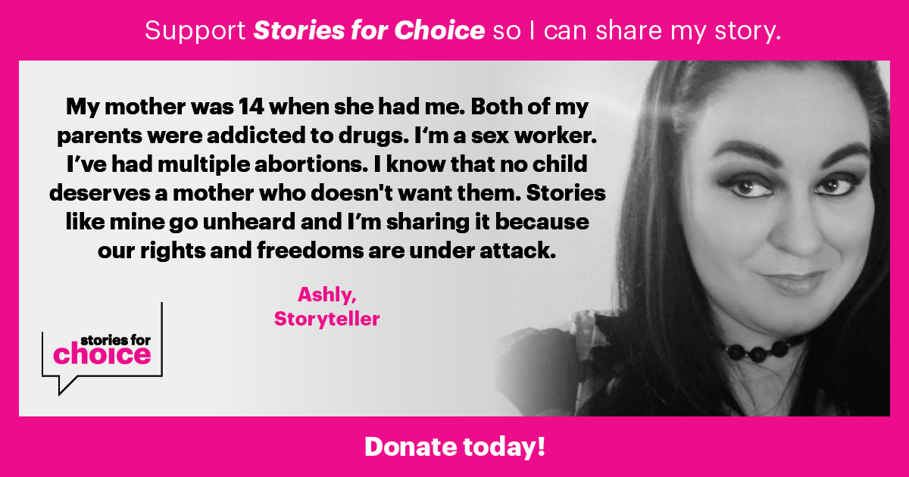

Speaking & Participation
I speak about reproductive justice from direct experience across advocacy, peer support, and storytelling. My work includes over 280 hours of involvement in organizing, direct support, and narrative-based programs.
What I can speak on
- Abortion experiences outside of “acceptable” or crisis-driven narratives
- What people actually need when they reach out to abortion support lines
- The gap between policy, access, and lived experience
- Emotional realities of abortion that are often overlooked or simplified
- Storytelling as a tool in reproductive justice movements
- Supporting people through pregnancy decisions without agenda or judgment
Relevant work
-
Stories of Choice – TMI Project (New York)
Participated in a cohort-based storytelling program culminating in a live monologue performance centered on abortion narratives. -
Talkline Advocate – All-Options
Provided peer support through a national Talkline, supporting people navigating pregnancy, abortion, parenting, and loss. Completed 90+ hours of shifts and 25+ hours of training. -
Electoral Fellow – Planned Parenthood Advocates of Oregon
Participated in a paid fellowship focused on organizing, canvassing, and voter outreach, contributing over 100 hours to advocacy efforts. -
Clinic Escort – Planned Parenthood Columbia Willamette
Supported patient access and safety as a clinic escort.
Open to
- Panels and speaking engagements
- Storytelling events and readings
- Workshops and facilitated discussions
- Podcast interviews
- Advocacy-related collaborations
Reach out
For speaking opportunities or collaboration inquiries, please reach out at: